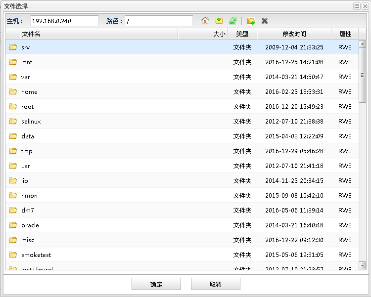

根目录
根目录 刷新
刷新 删除
删除文件选择对话框用于浏览选选择远程主机的文件。如下图所示：

服务选择功能列表| 操作 | 说明 |
|---|---|
| 主机 | 要选择文件的远程主机。 |
| 路径 | 显示当前选择路径的层级，以及输入过滤路径。 |
| 根目录 |
快速定位到根目录。 |
| 上级目录 | 快速定位到当前目录的上级目录。 |
| 刷新 |
刷新当前目录信息 |
| 新建文件夹 | 在当前目录信息新建文件夹 |
| 删除 |
删除当前选中的文件 |
文件信息列表
| 字段 | 说明 |
|---|---|
| 文件名 | 文件的名称。 |
| 大小 | 文件的大小。 |
| 类型 | 文件的类型。 |
| 修改时间 | 文件最近修改时间。 |
| 属性 | 文件的读写属性。 |